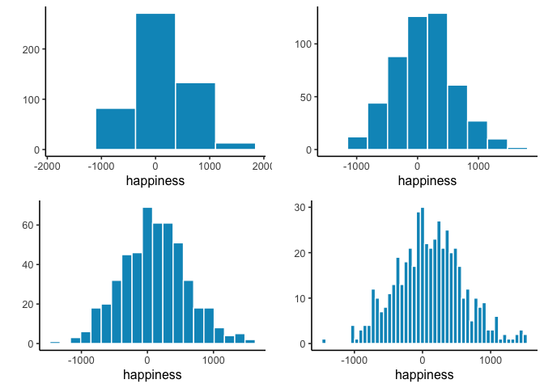
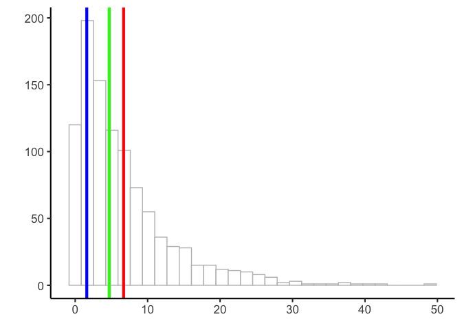
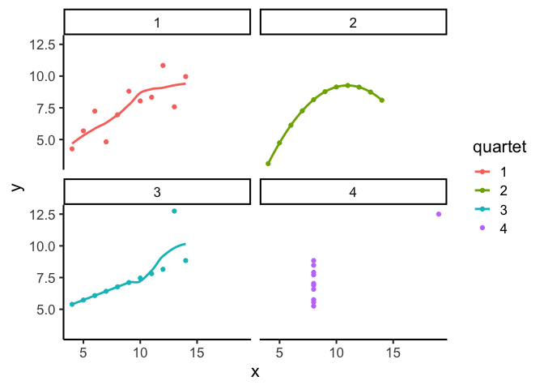

2 Describing Data
Far better an approximate answer to the right question, which is often vague, than an exact answer to the wrong question, which can always be made precise. *
—John W. Tukey
Statistics often begins with the problem of too much data. Modern environmental science generates vast amounts of information: rainfall at hundreds of stations, thousands of tree measurements in a forest survey, millions of satellite pixels. Looking at raw numbers alone is overwhelming and uninformative. We need tools to compress, summarize, and visualize. These are descriptive statistics.
Keep in mind:
- There is more than one useful way to describe data.
- You choose a description depending on what helps reveal the pattern you care about.
- All methods were invented for that reason. They are helpful shortcuts.
Imagine running a survey of 500 people’s happiness levels. The full dataset is just a long list of values. Staring at hundreds of numbers tells us little. How happy are most people? How unhappy are the unhappiest? Raw data alone can’t answer, we need to summarize.
2.1 Looking at the data
2.1.1 Scatter of raw values
One first step is simply to plot every value instead of listing them. Let’s look at them!
Figure 2.1 shows 500 measurements of happiness. The horizontal axis is an index of participants (1–500), and the vertical axis shows their reported happiness. Each dot represents one person’s score.
The way we choose to plot data makes some patterns easier to see and others harder. What do we notice here? There are indeed 500 dots, spread across a wide range: some values climb as high as about 1500, others fall below –1500. Most points cluster somewhere near zero, with fewer at the extremes.
Take-home: plotting all the values at once is already much more useful than staring at a raw table of numbers.
Still, the scatter doesn’t make it easy to answer questions like “are most people generally happy or unhappy?” For that, we need a different view, a histogram.
2.1.2 Histograms
Making a histogram summarizes data by grouping numbers rather than looking at individual data points. Figure 2.2 displays 500 happiness scores grouped into bins. Each bar shows how many people’s responses fall within a range. The bar between 0 and 500 indicates about 150 people in that range. The y-axis shows the frequency count of each bar.
The histogram makes patterns clearer than the scatterplot. Most of the responses fall between –500 and +500, with only a few extreme highs or lows. We can also see the overall spread of the data: roughly –1500 to +1500.
When making histograms, the width of the bins matters. If the bins are wide, the plot looks smooth but may hide detail. If they are narrow, the plot shows more variation but can appear noisy. Figure 2.3 compares the same data with different bin widths.

All of the histograms show the same general shape: few values at the extremes and many near zero. Narrow bins make the bars jump up and down, adding noise. Wider bins smooth the pattern, but if they’re too wide, important variation gets lost.
Take-home: histograms summarize individual values into a distribution, revealing both the typical range and how the data are spread. Bin width is a choice you make, and it affects what you see.
2.2 Important Ideas: Distribution, Central Tendency, and Variance
Three terms will keep coming up: distribution, central tendency, and variance. Their everyday meanings aren’t far from the statistical ones.
Distribution: how values are spread across their range. A histogram is one way of showing a distribution. The shape of the distribution tells us where values are concentrated, where they’re rare, and how far the extremes reach. Later we’ll see that distributions don’t just describe data, we also use them to generate theoretical data, which is the basis for sampling distributions and tools like t-tests.
Central tendency is about sameness: where values cluster. In the happiness histogram, most responses are near zero, so we say the data have a central tendency around zero. Central tendency doesn’t mean “everything is the same”, just that many values gather in a common area. Some datasets even have more than one cluster, and therefore more than one central tendency.
Variance is about differentness: how spread out the values are. If all responses were nearly identical, variance would be low. In our happiness example, values range widely from strongly negative to strongly positive, so variance is high. In practice, variance is a family of measures we use to quantify differences, and we’ll introduce those next.
2.3 Measures of Central Tendency (Sameness)
Plots and histograms show where values fall, but lack precision. We can summarize data with a single number representing its “center” - these measures of central tendency show what values are generally like.
2.3.1 Mode
The mode is the most frequently occurring value in a dataset. How do you find it? You have to count the number of times each number appears, then whichever one occurs the most, is the mode.
Example: 1 1 1 2 3 4 5 6
The mode is 1, since it appears three times.
If two or more values tie for most frequent, the dataset has multiple modes:
Example: 1 1 1 2 2 2 3 4 5 6
Here, 1 and 2 both occur three times each. So, there are two modes, and they are 1 and 2.
Is the mode a good measure of central tendency? That depends on your numbers. The mode can be useful when a dataset has clear repeating values, but it doesn’t always capture what’s “typical.” For example:
1 1 2 3 4 5 6 7 8 9
Here, the mode is 1, but most numbers are larger. Like any statistical tool, consider if the mode suits your dataset and justify that choice.
2.3.2 Median
The median is the exact middle of the data once they are ordered from smallest to largest. For example:
1 5 4 3 6 7 9
Before we can compute the median, we need to order the numbers from smallest to largest. Ordered:
1 3 4 5 6 7 9
The median is 5, with three numbers on each side.
With an even number of values, the median is the midpoint between the two in the center:
1 2 3 4 5 6
Here we have six numbers, so there isn’t a single middle value. Instead, the median is the midpoint between the two central numbers, 3 and 4, which gives 3.5.
The median is often a useful measure of central tendency because it stays put even if some values are extreme. For example:
1 2 3 4 4 4 5 6 6 6 7 7 1000
Most of these numbers are modest, but 1000 is far from the rest. The median is still 5, which reflects the bulk of the data despite that extreme value. This shows why the median often does a good job of representing a dataset even when one or two values are very different.
In this case, 1000 would be considered an outlier: a value much farther from the others. Outliers can strongly affect some summaries (like the mean) but leave the median unchanged. How to handle outliers is a topic we return to later in the course.
2.3.3 Mean
Have you noticed this statistics textbook hasn’t used a formula yet? That’s about to change, but don’t worry if you have formula anxiety - we’ll explain them. The mean is also called the average. You probably know it’s the sum of numbers divided by how many numbers there are.
Here’s the formula:
\(Mean = \bar{X} = \frac{\sum_{i=1}^{n} x_{i}}{N}\)
The \(\sum\) symbol is called sigma, and it stands for the operation of summing.
The “i” and “n” refer to all numbers in the set, from first to last.
The \(x_{i}\) refers to individual numbers in the set.
\(\bar{X}\) refers to the mean
We sum them all, then divide by \(N\), the total count.
In simpler terms:
\(mean = \frac{\text{Sum of my numbers}}{\text{Count of my numbers}}\)
Let’s compute the mean for these five numbers:
3 7 9 2 6
Add them:
3+7+9+2+6 = 27
Count them:
\(i_{1}\) = 3, \(i_{2}\) = 7, \(i_{3}\) = 9, \(i_{4}\) = 2, \(i_{5}\) = 6; N=5, because \(i\) went from 1 to 5
Divide:
mean = 27 / 5 = 5.4
Or, putting everything in the formula:
\(Mean = \bar{X} = \frac{\sum_{i=1}^{n} x_{i}}{N} = \frac{3+7+9+2+6}{5} = \frac{27}{5} = 5.4\)
That’s how to compute the mean. You probably knew this already, and if not, now you do. But is the mean a good measure of central tendency? By now, you should know: it depends.
2.3.4 What does the mean mean?
It’s not enough to know how to calculate a mean, you also need to understand what it represents. The formula divides the sum of all values by the number of values, but what does that operation actually do?
Think about division. If we compute
\(\frac{12}{3} = 4\)
we’re splitting 12 into three equal parts. Each part is 4. Division equalizes the numerator into identical pieces.
“The same logic applies to the mean. Suppose you add up all 500 happiness ratings into one large total. If that total were redistributed equally across every person, each would get the same value. That value is the mean. Some individuals were originally higher or lower, but the mean is the balance point created by spreading the total evenly.
This is why the mean is more than just arithmetic. It is the one number that can replace every observation so that, when all those replacements are added together, you get back the original total.
Takeaway
The mean is unique: it is the only single value that can replace every observation so that the total stays the same.
2.3.5 Comparing the mean, median, and mode
Figure 2.4 shows a histogram of simulated data with three vertical lines: the mode (blue, ≈ 1), the median (green, ≈ 6), and the mean (red, ≈ 8).
Notice that these three measures of central tendency do not agree. The mean is pulled to the right because of a few very large values in the tail. The median is more stable, landing near the middle of the bulk of the data. The mode marks the most common single value, which here is close to zero.

Takeaway
When data are skewed—as they are here with a long right tail—the mean, median, and mode can give very different answers. Understanding how each behaves is essential for choosing the right summary.
2.4 Measures of Variation (Differentness)
Central tendency tells us what values have in common. Measures of variation tell us how they differ. Any dataset with more than one value will show some variation, and summarizing that spread is as important as finding the center.
2.4.1 The Range
Consider these 10 ordered numbers:
1 3 4 5 5 6 7 8 9 24
The smallest is 1, the largest is 24. Together they define the range. The range quickly shows the boundaries of the data and can flag possible outliers. For instance, if you expected values between 1 and 7 but found one at 340,500, you’d know something unusual happened and might investigate.
2.4.2 Difference Scores
It would be nice to summarize the amount of differentness in the data. Think about these 10 ordered numbers:
1 3 4 5 5 6 7 8 9 24
We can compute the differences between each pair of numbers and put them in a matrix:
| 1 | 3 | 4 | 5 | 5 | 6 | 7 | 8 | 9 | 24 | |
|---|---|---|---|---|---|---|---|---|---|---|
| 1 | 0 | 2 | 3 | 4 | 4 | 5 | 6 | 7 | 8 | 23 |
| 3 | -2 | 0 | 1 | 2 | 2 | 3 | 4 | 5 | 6 | 21 |
| 4 | -3 | -1 | 0 | 1 | 1 | 2 | 3 | 4 | 5 | 20 |
| 5 | -4 | -2 | -1 | 0 | 0 | 1 | 2 | 3 | 4 | 19 |
| 5 | -4 | -2 | -1 | 0 | 0 | 1 | 2 | 3 | 4 | 19 |
| 6 | -5 | -3 | -2 | -1 | -1 | 0 | 1 | 2 | 3 | 18 |
| 7 | -6 | -4 | -3 | -2 | -2 | -1 | 0 | 1 | 2 | 17 |
| 8 | -7 | -5 | -4 | -3 | -3 | -2 | -1 | 0 | 1 | 16 |
| 9 | -8 | -6 | -5 | -4 | -4 | -3 | -2 | -1 | 0 | 15 |
| 24 | -23 | -21 | -20 | -19 | -19 | -18 | -17 | -16 | -15 | 0 |
In the top left, the difference between 1 and itself is 0. One column over, 3–1 = 2, and so on. With 10 numbers this produces 100 differences. With 500 numbers, you’d have 250,000—too many to be useful.
If all the numbers were the same, every difference would be 0, making the lack of variation obvious. But with different numbers, we end up with a large table. How can we summarize it? One idea is to apply what we learned about central tendency and take the average difference.
Let’s try it with three numbers:
1 2 3
| 1 | 2 | 3 | |
|---|---|---|---|
| 1 | 0 | 1 | 2 |
| 2 | -1 | 0 | 1 |
| 3 | -2 | -1 | 0 |
The mean of these nine difference scores is:
\(\text{mean of difference scores} = \frac{0+1+2-1+0+1-2-1+0}{9} = \frac{0}{9} = 0\)
This will always happen: the positives and negatives cancel. So the mean of raw difference scores is not a useful measure of variation.
Notice also that the matrix is redundant: the diagonal is always zero, and values above and below the diagonal are the same except for sign.
These problems motivate why we compute variance and standard deviation. They solve the cancellation issue and give us a practical summary of spread.
2.4.3 The Variance
We’ve used the words variability, variation, and variance a lot. They all point to the same big idea: numbers differ. When numbers are different, they have variance.]
The word variance is used in two ways. First, it can mean the general idea of differences between numbers—when values vary, there is variance. Second, it refers to a specific summary statistic: the mean of the squared deviations from the mean.
To calculate it, we take each score, subtract the mean to find its difference score, then square those differences, then average them. Squaring is the mathematical “trick” that keeps positive and negative deviations from canceling each other out. Finally, we average the squared deviations. In short:
\(variance = \frac{\text{Sum of squared difference scores}}{\text{Number of Scores}}\)
Later we’ll distinguish between dividing by \(N\) (all data = population) or \(N-1\) (sample). For now, just use \(N\).
2.4.3.1 Deviations from the mean
Earlier we compared every number to every other number, which quickly became unmanageable. A simpler approach is to compare each score to the mean.
Step 1: Find the mean.
Step 2: Subtract the mean from each score.
This tells us:
How well the mean represents the data
How much spread there is around that mean.
Here’s an example:
| scores | values | mean | Difference_from_Mean |
|---|---|---|---|
| 1 | 1 | 4.5 | -3.5 |
| 2 | 6 | 4.5 | 1.5 |
| 3 | 4 | 4.5 | -0.5 |
| 4 | 2 | 4.5 | -2.5 |
| 5 | 6 | 4.5 | 1.5 |
| 6 | 8 | 4.5 | 3.5 |
| Sums | 27 | 27 | 0 |
| Means | 4.5 | 4.5 | 0 |
The mean is \(4.5\):
\(\frac{1+6+4+2+6+8}{6} = \frac{27}{6} = 4.5\).
The third column simply repeats this mean for each row. That looks odd, but it shows the important property I mentioned earlier: the mean distributes the total equally across all points. Six copies of 4.5 add back to the total of 27.
The fourth column shows the deviation from the mean: \(X_{i}-\bar{X}\). For example, 1, is -3.5 from the mean, 6, is +1.5, and so on.
Now notice the problem: the deviations add up to zero. The positive and negative differences cancel, which makes it seem like there’s no variation. Clearly that isn’t true, so we’ll need another step, squaring the deviations, to solve it. But first let’s investigate why this happens.
2.4.3.2 Mean as the Balancing Point
The mean is the balancing point of the data. Imagine laying a ruler across your finger. The place where it balances is the point where the weight on each side is equal. Data works the same way: if we treat each value like a weight, the mean is where the total “mass” to the left and right cancel out.
This balancing property explains why the deviations always sum to zero. The values below the mean contribute negative deviations, the values above contribute positive ones, and together they cancel:
\(-x + x = 0\)
To see this more concretely, consider the numbers
\(X = (1,2,6,7,9)\)

Now imagine the number line as a teeter-totter. Only when the fulcrum is placed at 5 does the board balance:

Formally, this means the signed distances from the mean always cancel out:
\((1−5)+(2−5)+(6−5)+(7−5)+(9−5)=0\)
This makes the mean unique. It is the only value for which the sum of deviations equals zero:
\(\sum_{i=1}^{n}x_{{i}-a} = 0 \quad \Rightarrow \quad a = \bar{x}\)
The mean is not just a “typical” value, it is the one point where the data balance. And that balancing property is exactly why the raw deviations always sum to zero. To summarize variation, we need a way around this problem.
2.4.3.3 The squared deviations
The standard trick is to square the deviations. Squaring converts negatives to positives:
\(2^2 = 4\)
\(-2^2 = 4\).
Since a squared number is always non-negative, the deviations no longer cancel. We call these squared deviations: differences from the mean that have been squared.
Let’s revisit our table, this time adding a column for squared deviations:
| scores | values | mean | Difference_from_Mean | Squared_Deviations |
|---|---|---|---|---|
| 1 | 1 | 4.5 | -3.5 | 12.25 |
| 2 | 6 | 4.5 | 1.5 | 2.25 |
| 3 | 4 | 4.5 | -0.5 | 0.25 |
| 4 | 2 | 4.5 | -2.5 | 6.25 |
| 5 | 6 | 4.5 | 1.5 | 2.25 |
| 6 | 8 | 4.5 | 3.5 | 12.25 |
| Sums | 27 | 27 | 0 | 35.5 |
| Means | 4.5 | 4.5 | 0 | 5.91666666666667 |
For example, the first score is 1, which is 3.5 below the mean. Its deviation is \(−3.5\), and its squared deviation is \((−3.5)^2=12.25\).
Now that all deviations are positive, we can add them up. The result is the sum of squares (SS), the sum of squared deviations from the mean. You’ll see this quantity again in the ANOVA chapter, but the idea is simple: it’s just the total of those squared deviations, nothing more.
2.4.3.4 Finally, the variance
Guess what, we’ve already computed the variance. Maybe you didn’t notice.
Let’s remind ourselves of the goal: we want a single number that summarizes how spread out the data are. Deviations from the mean show those differences, but there are as many deviations as data points. To simplify, we want the average squared deviation.
Look back at the table. We added up the squared deviations (the sum of squares, SS), and then we divided by the number of observations. That’s the variance. The variance is the mean of the sum of the squared deviations:
\(variance = \frac{SS}{N}\)
where SS is the sum of squared deviations, and N is the number of observations.
For our data, this came out to 5.916 (repeating).
So what does that number mean? Honestly, not much on its own. The problem is that it’s on the squared scale, remember, we squared the deviations before averaging. Squaring inflates the values, so the variance is no longer in the same units as the original data.
The fix is straightforward: take the square root. For our example,
\(\sqrt{5.916} ≈2.43\)
2.4.4 The Standard Deviation
We did it again, we already computed the standard deviation (SD), without calling it by name. The standard deviation is just the square root of the variance:
\(\text{standard deviation} = \sqrt{Variance} = \sqrt{\frac{SS}{N}}\).
or, written out fully,
\(\text{standard deviation} = \sqrt{\frac{\sum_{i}^{n}({x_{i}-\bar{x})^2}}{N}}\)
Those square root signs simply “unsquare” the variance, bringing the measure of spread back to the original scale of the data. Let’s look at our table again:
| scores | values | mean | Difference_from_Mean | Squared_Deviations |
|---|---|---|---|---|
| 1 | 1 | 4.5 | -3.5 | 12.25 |
| 2 | 6 | 4.5 | 1.5 | 2.25 |
| 3 | 4 | 4.5 | -0.5 | 0.25 |
| 4 | 2 | 4.5 | -2.5 | 6.25 |
| 5 | 6 | 4.5 | 1.5 | 2.25 |
| 6 | 8 | 4.5 | 3.5 | 12.25 |
| Sums | 27 | 27 | 0 | 35.5 |
| Means | 4.5 | 4.5 | 0 | 5.91666666666667 |
We calculated our standard deviation as:
\(\sqrt{5.916} ≈2.43\)
This value makes much more sense than the variance. A variance of 5.916 feels too large for this dataset, because it’s on the squared scale. But a standard deviation of 2.43 lines up with the actual differences from the mean—most scores are within about ±2.4 of 4.5.
So if someone told you their dataset had a mean of 4.5 and a standard deviation of 2.4, you’d already have a good sense of it: the numbers cluster around 4.5, but not exactly at 4.5, and the typical spread is about 2 to 3 units in either direction.
That’s the power of the standard deviation: it gives you a single number that describes the typical deviation from the mean, while staying on the same scale as the original data.
2.4.5 Mean Absolute Deviation
So far we’ve handled the “differences cancel out” problem by squaring deviations. But there’s another simple option: take the absolute value of each deviation from the mean. That way, every difference becomes positive, and when we add them up we don’t end up at zero.
Here’s what that looks like for our data:
| scores | values | mean | Difference_from_Mean | Absolute_Deviations |
|---|---|---|---|---|
| 1 | 1 | 4.5 | -3.5 | 3.5 |
| 2 | 6 | 4.5 | 1.5 | 1.5 |
| 3 | 4 | 4.5 | -0.5 | 0.5 |
| 4 | 2 | 4.5 | -2.5 | 2.5 |
| 5 | 6 | 4.5 | 1.5 | 1.5 |
| 6 | 8 | 4.5 | 3.5 | 3.5 |
| Sums | 27 | 27 | 0 | 13 |
| Means | 4.5 | 4.5 | 0 | 2.16666666666667 |
The last column shows absolute deviations. If we take their mean, we get the mean absolute deviation (MAD). Notice this acts a lot like the standard deviation: it’s the average size of a deviation from the mean, only without squaring.Both approaches—squaring or taking absolute values—solve the same problem in slightly different ways. Squaring is more common because it leads to nice mathematical properties (like in regression and ANOVA), but the MAD can be more intuitive to interpret.
2.5 Remember to look at your data
Descriptive statistics are useful, but they are also compressed summaries. They reduce a dataset to a few numbers, which means they always lose detail. That’s fine if the summary captures the important features, but sometimes it doesn’t.
The safest habit is to always combine descriptive statistics with graphs. Graphs show you the shape of the data and reveal patterns summaries can hide.
2.5.1 Anscombe’s Quartet
Francis Anscombe (Anscombe (1973)) made this point with a famous example, now called Anscombe’s Quartet. Each panel in Figure Figure 2.7 shows pairs of \(x\) and \(y\) values as a scatterplot.
Visually, the four panels are very different: one looks linear, one curved, one has an outlier, and one forms a vertical line.

Now here’s the kicker:
| quartet | mean_x | var_x | mean_y | var_y |
|---|---|---|---|---|
| 1 | 9 | 11 | 7.500909 | 4.127269 |
| 2 | 9 | 11 | 7.500909 | 4.127629 |
| 3 | 9 | 11 | 7.500000 | 4.122620 |
| 4 | 9 | 11 | 7.500909 | 4.123249 |
All four datasets have the exact same descriptive statistics:
same mean and variance for \(x\)
same mean and variance for \(y\)
same correlation between \(x\) and \(y\)
Yet the scatterplots could not look more different.
Takeaway
Descriptive statistics alone can be misleading. Always look at the graph. Numbers may be identical, but patterns can be radically different.
2.5.2 Datasaurus Dozen
If you thought that Anscombe’s quartet was neat, you should take a look at the Datasaurus Dozen (Matejka and Fitzmaurice 2017). hey constructed 13 datasets with nearly identical means, variances, and correlations — but when plotted, the points form shapes like a star, a circle, or even a dinosaur. Another reminder: your numbers might look like a dinosaur if you don’t plot them.